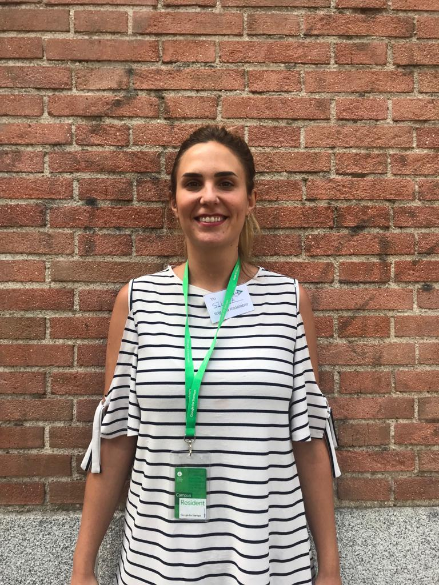
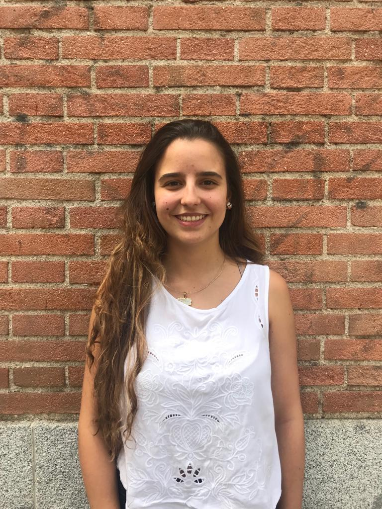
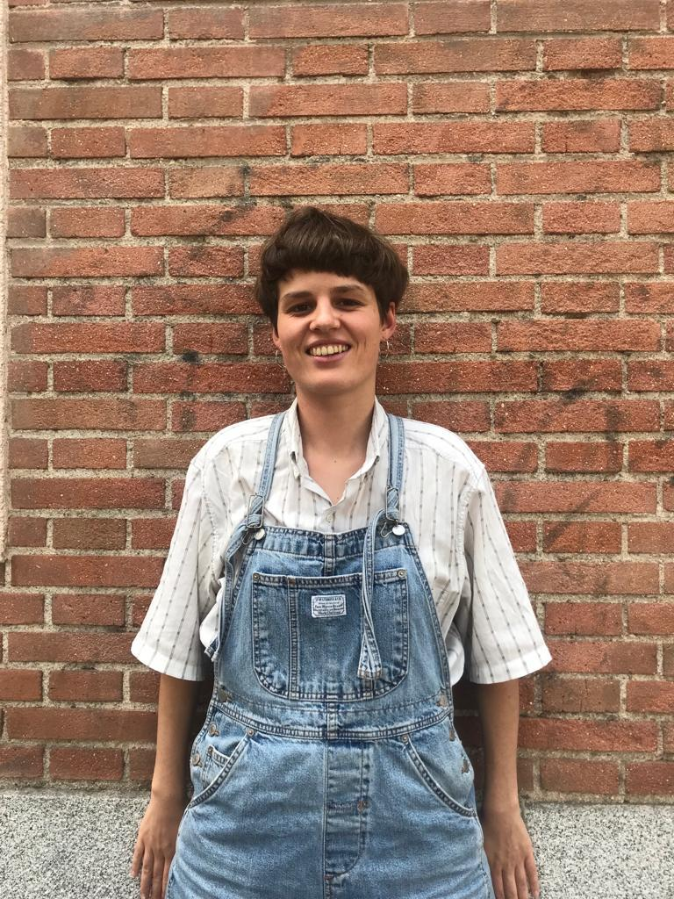
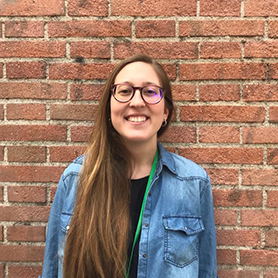
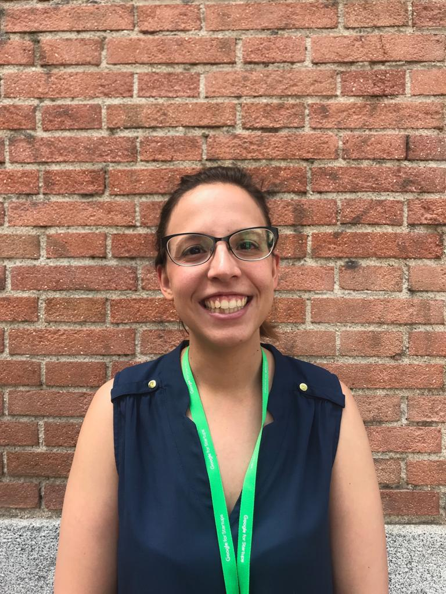
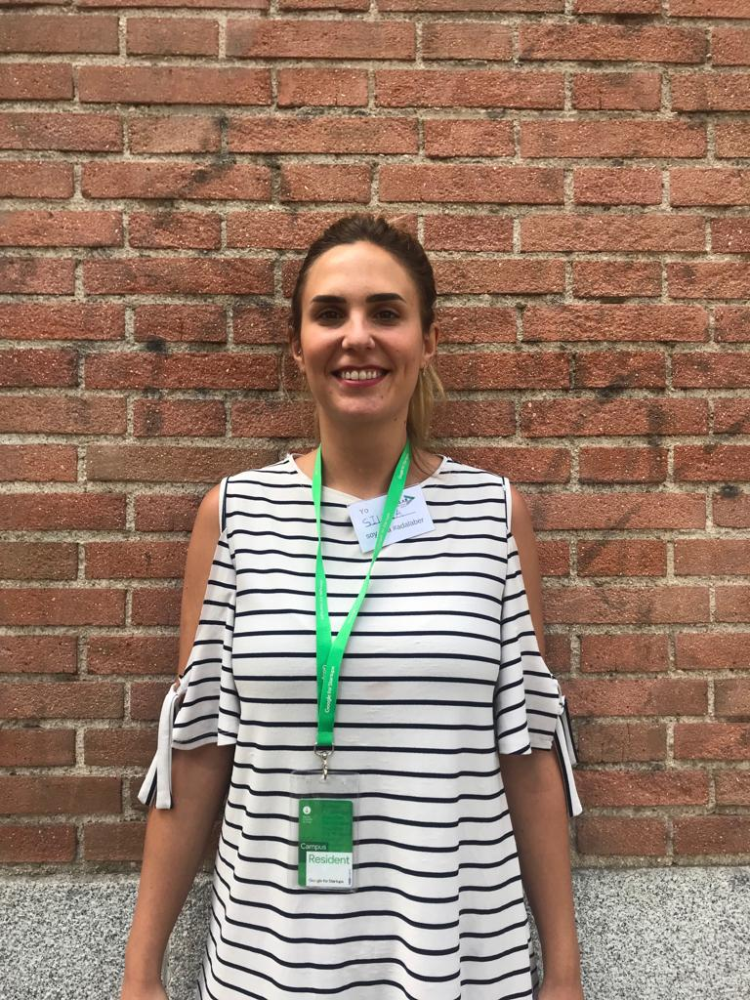
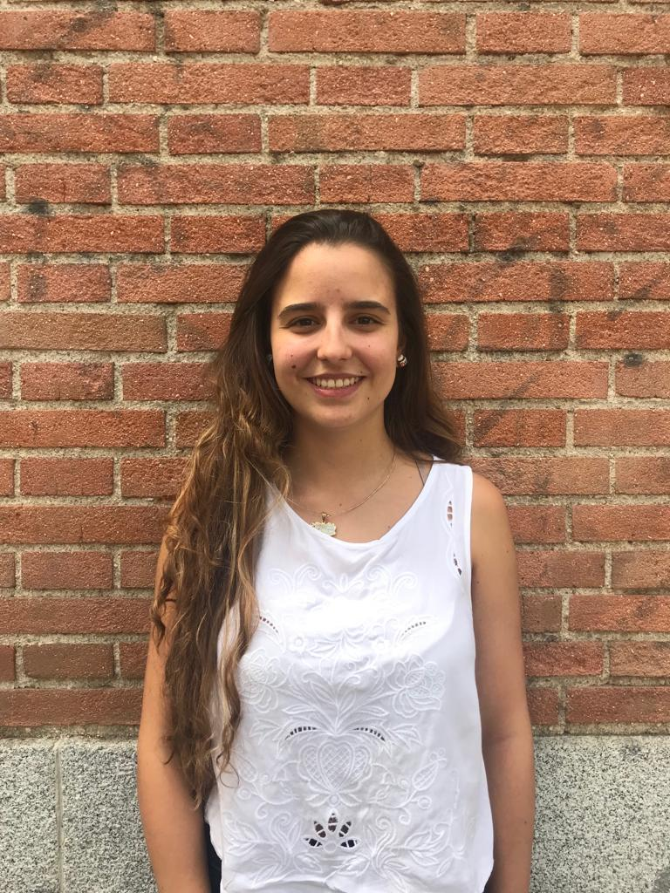
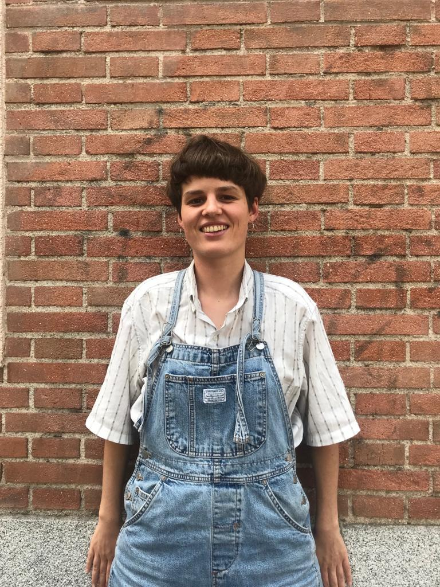
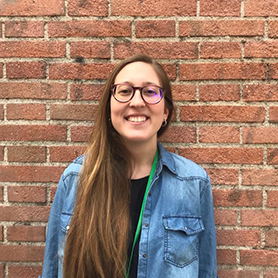
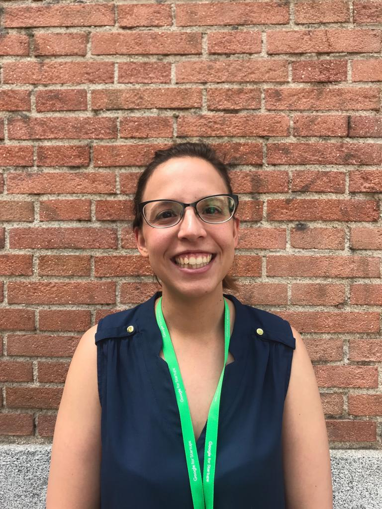

EQUIPO
Somos un equipo multidisciplinar de cinco mujeres programadoras front-end en formación. Contamos con grandes habilidades de análisis, planificación, organización, autonomía y capacidad de aprendizaje. Desarrollamos proyectos en grupo utilizando pair-programming y siguiendo los principios de la filosofía Agile.
Estamos dispuestas a luchar por nuestros sueños y alcanzarlos sin importar los obstáculos del camino. Abordamos todos los proyectos en los que nos embarcamos con compromiso, motivación e ilusión. Contar con nosotras en tu equipo es una apuesta segura.
Quiénes somos
-

Silvia de Miguel Perez
Madrileña de adopción pero pamplonesa de toda la vida PTV. Muy perseverante y comprometida en
todo lo que hago. Me gusta trabajar en equipo y ayudar a mis compañeros. Muestro
productividad y dinamismo. Tengo predisposición para aprender cualquier lenguaje y estoy
abierta a los cambios.
-

-

-

Natalia Millán Sahún
De Madrid de toda la vida. Entre esta ciudad y Holanda estudié la carrera de Psicología y me especialicé en Psicoterapia Psicoanalítica.
Con una eterna dificultad para elegir entre lo social y lo científico-tecnológico, ahora decido probar suerte con la programación de la mano de Adalab.
-

Rocío Poza
Nacida en Madrid. He estudiado música desde los 6 años, completé mi especialización en viola en el Conservatorio Superior de Música de Aragón y realizado un máster en pedagogía musical.
He trabajado durante los últimos ocho años como profesora de instrumento y he decidido realizar un cambio en mi vida y convertirme en desarrolladora front-end gracias a Adalab.
-

Silvia de Miguel Perez
Madrileña de adopción pero pamplonesa de toda la vida PTV. Muy perseverante y comprometida en todo lo que hago. Me gusta trabajar en equipo y ayudar a mis compañeros. Muestro productividad y dinamismo. Tengo predisposición para aprender cualquier lenguaje y estoy abierta a los cambios.
-

-

-

Natalia Millán Sahún
De Madrid de toda la vida. Entre esta ciudad y Holanda estudié la carrera de Psicología y me especialicé en Psicoterapia Psicoanalítica. Con una eterna dificultad para elegir entre lo social y lo científico-tecnológico, ahora decido probar suerte con la programación de la mano de Adalab.
-

Rocío Poza
Nacida en Madrid. He estudiado música desde los 6 años, completé mi especialización en viola en el Conservatorio Superior de Música de Aragón y realizado un máster en pedagogía musical. He trabajado durante los últimos ocho años como profesora de instrumento y he decidido realizar un cambio en mi vida y convertirme en desarrolladora front-end gracias a Adalab.